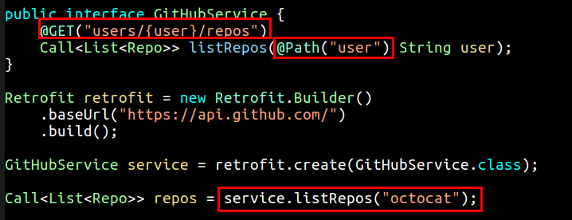
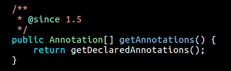
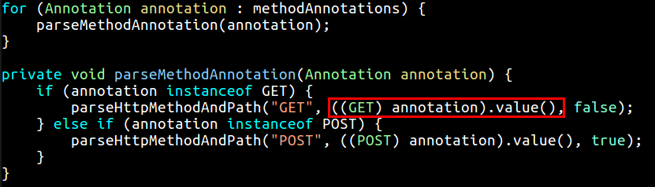
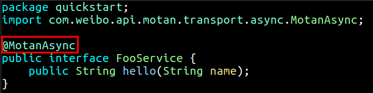
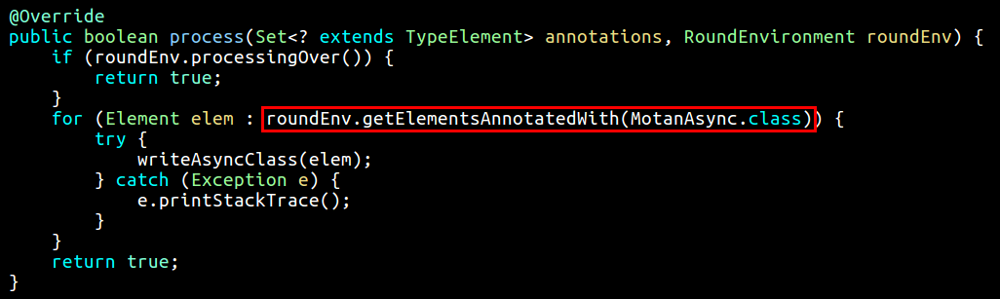

Annotation
注解在许多出名的框架中应用甚广，基于注解配置的方式通常可以在类加载的时候对这些被注解的类自动做一些有意思的事情，根据用户不同的配置，生成不同的信息与代码等，其目的就是让用户书写更少的代码和拥有更灵活的使用框架的方式。以 Retrofit 为例，用户可以这样进行 HTTP 请求:

以这样的方式编程，的确是很具有吸引力啊。上述代码中的 @GET 和 @Path 就是两个注解，对应的源码如下:
|
|
其中 @Documented 是为了告诉 javadoc 生成文档的时候别忘了也带上这个注解类；@Retention 指明注解类存活多长时间，比如你可以指明在运行期间依然存在，或者仅仅为了编译而存在等等；@Target 则描述了这个注解可以应用在 Java 的哪些代码段上，是构造函数、类、接口，还是参数或者方法等。我们可以看到 @GET 声明了 @Target(METHOD)，因此这个注解只能被用在方法上；而 @Path 声明了 @Target(PARAMETER)，因此它只能被用在参数上。如果需要它能够被用在代码的多个地方可以这样写:
|
|
一般而言，注解与反射是形影不离的。开发者可以通过 Method.getAnnotations() 方法来获得在某个方法上的所有的注解，以下是 java.lang.reflect.AccessibleObject.java 中的源码:

而 Retrofit 也不例外，它在获得到开发者想要调用的方法之后，如 GithubService，便会尝试获得该方法的所有 Annotations，然后尝试调用注解的方法 value() :

调用成功之后，便会对路径进行解析，进而可以执行相应的 Http 请求了。
Motan
另外一种常用的注解使用方式，是在编译期间自动生成代码，如微博的 RPC 调用框架 motan ，当你声明 @MotanAsync 注解的时候，其允许你进行异步 RPC 调用:

motan 的 MotanAsyncProcessor 继承了 AbstractProcessor， 在方法中检测哪些类实现了声明了注解 @MotanAsync，然后在编译的时候就为这个类自动生成另外一个类，让客户来调用:
